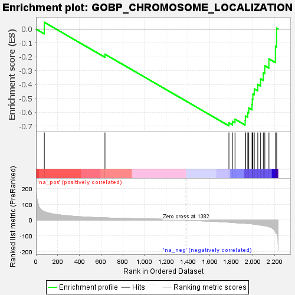
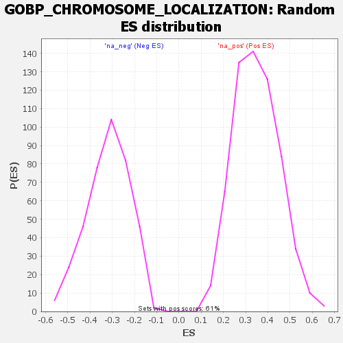

| Dataset | rank |
| Phenotype | NoPhenotypeAvailable |
| Upregulated in class | na_neg |
| GeneSet | GOBP_CHROMOSOME_LOCALIZATION |
| Enrichment Score (ES) | -0.69714373 |
| Normalized Enrichment Score (NES) | -2.1912541 |
| Nominal p-value | 0.0 |
| FDR q-value | 8.071457E-4 |
| FWER p-Value | 0.008 |

| SYMBOL | RANK IN GENE LIST | RANK METRIC SCORE | RUNNING ES | CORE ENRICHMENT | |
|---|---|---|---|---|---|
| 1 | KAT5 | 77 | 53.901 | 0.0486 | No |
| 2 | KAT2B | 636 | 14.317 | -0.1813 | No |
| 3 | ZWINT | 1779 | -13.957 | -0.6756 | Yes |
| 4 | CEP55 | 1812 | -15.868 | -0.6655 | Yes |
| 5 | KIF22 | 1835 | -16.927 | -0.6492 | Yes |
| 6 | XRCC4 | 1929 | -21.122 | -0.6586 | Yes |
| 7 | KNSTRN | 1931 | -21.192 | -0.6263 | Yes |
| 8 | ECT2 | 1953 | -22.655 | -0.6007 | Yes |
| 9 | SPC24 | 1962 | -23.057 | -0.5687 | Yes |
| 10 | CCNB1 | 1992 | -24.960 | -0.5432 | Yes |
| 11 | CENPQ | 1995 | -25.094 | -0.5053 | Yes |
| 12 | PINX1 | 2000 | -25.391 | -0.4679 | Yes |
| 13 | AURKB | 2013 | -27.047 | -0.4315 | Yes |
| 14 | CDCA8 | 2045 | -30.452 | -0.3984 | Yes |
| 15 | NDEL1 | 2071 | -32.599 | -0.3593 | Yes |
| 16 | SPDL1 | 2096 | -35.366 | -0.3154 | Yes |
| 17 | ZWILCH | 2110 | -36.674 | -0.2646 | Yes |
| 18 | NUF2 | 2148 | -42.906 | -0.2150 | Yes |
| 19 | KIF2C | 2208 | -76.172 | -0.1238 | Yes |
| 20 | SIRT1 | 2219 | -87.108 | 0.0063 | Yes |
